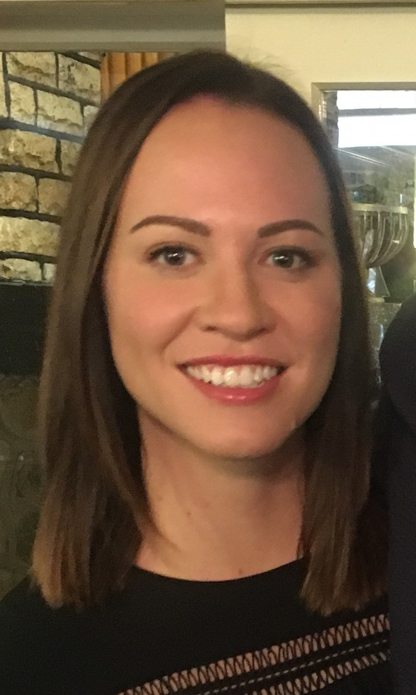

Venue
The event will be held in Rutherford House on Victoria University of Wellington's Pipitea Campus, in the mezzanine foyer and surrounding spaces.
Come Along
Click on the relevant links above to register for ResBaz Welli 2018. If you're keen to attend the CODE stream, which begins on Wednesday July 4th and features lessons on Bash, R, Python and Git, please register via both buttons. If you want to attend the core event only, just use the Register button.
Sessions
Click on the session titles below to get an idea of what will be on offer. More sessions and a detailed programme will be available soon, so make sure you return to this site to keep updated.
In part two, Stuart talks his way through the creation of a new wikipedia article, explaining what he's doing, why he's doing it and how to avoid common mistakes.
Related links:
Wikipedia Authority Control ; NZ Research ; Wikimedia Projects.
The best way to learn how to program is to do something useful, so this introduction to R is built around a common scientific task: data analysis.
The goal isn’t just to teach you R, but also the basic concepts that all programming depends on. (CODE stream only).
Timetable
Weds July 4th (CODE stream only)
Thursday July 5th
*Sessions marked with an asterix only available to those registered for the CODE stream.
Friday July 6th
*Sessions marked with an asterix only available to those registered for the CODE stream.
Meet Our Speakers
|
 Kylie Reiri Kylie is a data scientist who has a keen interest in making it easier to work with data. From building systems in automated and reusable ways, to upskilling people to make sure the capabilities exist to get the most out of our data rich world. Kylie is currently managing a team of data scientists and IT experts for Nicholson Consulting. Kylie holds a Master of Science (Applied Statistics) and a Bachelor of Science (Statistics and Marine Biology), both from Victoria University of Wellington. She has held previous roles as a statistician at Statistics NZ, Inland Revenue, the Ministry of Health, and most recently as the Technical Lead at the Social Investment Agency. |
Dr Paul Bracewell Paul Bracewell is a founder of DOT loves data where he leads the analytical and technical teams. Paul is passionate about analytics and how it can impact the world around us. This enthusiasm has been honed by nearly 20 years of using analytics to solve business problems and shape strategies in a range of contexts. In addition to having award-winning PhD research under his belt, Paul has been directly involved in the sale of two analytics businesses. He is an Adjunct Research Fellow within Victoria University’s School of Mathematics and Statistics where he supervises PhD and Masters Students and has also lectured within the School of Marketing & International Business. |
|
Markus Luczak-Roesch Markus Luczak-Roesch is a Senior Lecturer in the School of Information Management at Victoria University. His research focuses on the foundations of space and time in the context of information, as well as emergent meaning that is rooted in coincidence. The information sequences Markus is studying stem from digital traces left by humans in online communities such as Wikipedia and citizen science platforms such as Zooniverse, but also literary texts, brain wave recordings, and micro-linguistic data about language use. |

Harkanwal Singh @kamal_hothi Harkanwal is the founder of Elements Data Studio. Previously, he was the head of data journalism at the New Zealand Herald. He is passionate about developing data visualisation for communication. He will share his ideas and experience on creating data visualisation to communicate research effectively to a general audience. |